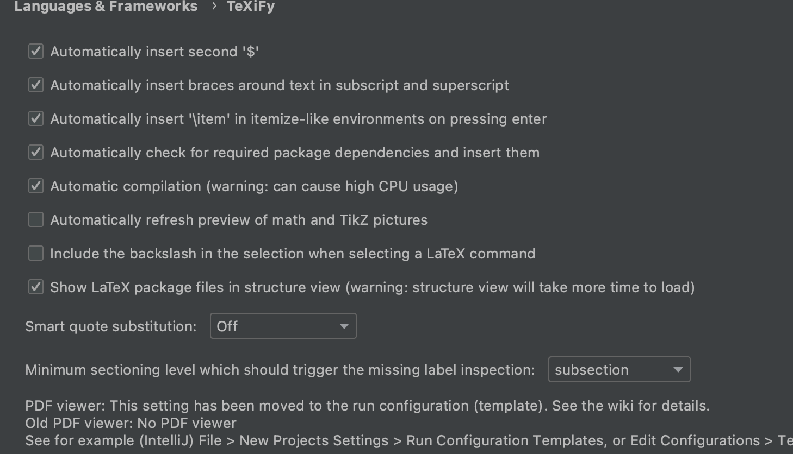
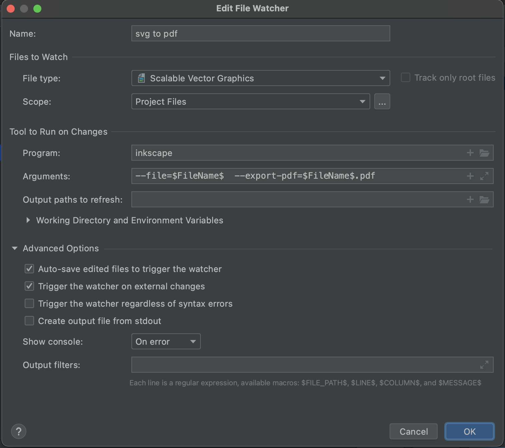
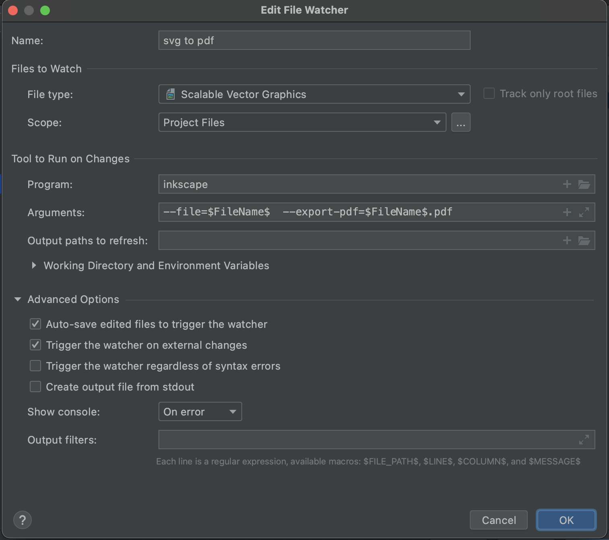

TL;DR: IntelliJ Idea świetnie nadaje się do pracy z LaTeX. Podstawową funkcjonalność zapewniają plugin-y, a sporo dodatkowych automatyzacji można sobie ustawić za pomocą File Watcher-ów. Brakuje mi tylko wyświetlania rozdziałów i sekcji jak np. w TexStudio.
LaTeX w IntelliJ IDEA
Nie pracuję z LaTeX-em zbyt często, ale ten format ma sporo zalet, zwłaszcza przy pracy nad dłuższymi formami pisanymi, zawierającymi sporo grafik, diagramów, formuł matematycznych itp. Zwykle korzystałem z TexStudio, ale postanowiłem sprawdzić, czy i jak poradzi sobie IntelliJ IDEA, którego używam na co dzień.
I radzi sobie świetnie. Do TexStudio raczej już nie wrócę :) Bo i tak korzystałbym z IntelliJ do pisania np. fragmentów kodu, które potem wklejałbym do dedykowanego edytora LaTeX. A lubię mieć wszystko w jednym IDE.
Moje założenia
Założyłem sobie, że chcę mieć framework do pisania dłuższych tekstów, docelowo do publikacji jako ebook lub do druku. Najchętniej mając wszystko w kodzie (diagramy, wykresy), używając kontroli wersji, czyli tak jak zwykle pracuję. Dlatego z miejsca odrzuciłem Google Docs czy MS Office. LaTeX wydaje się całkiem dobrym rozwiązaniem:
- wszystko jest w kodzie, tekst, style formatowania, fragmenty kodu w dedykowanych plikach, diagramy
- organizacja projektu w wielu folderach i plikach, np osobne pliki na rozdziały i jeden główny plik zbierający całość dokumentu
- świetne wsparcie dla bibliografii, przypisów i spisu treści
- łatwe generowanie PDF-ów
- …i pewnie sporo innych zalet, których jeszcze nie poznałem.
Jednak są pewne problemy:
- podgląd dokumentu — nie jest dostępny od razu, dopiero po kompilacji. To może być nawet zaleta, bo nie skupiam się na wyglądzie, tylko na treści. A sam wygląd powinien podlegać z góry ustalonym regułom dla całego dokumentu. Można ustawić automatyczną kompilację i podgląd wewnątrz IDE.
- kolorowanie składni kodu — póki co, brak oficjalnego wsparcia dla
Kotlina, ale znalazłem szablon na GitHubie - wsparcie dla diagramów — chyba są jakieś pakiety dla LaTeX-a ale nie chce mi się ich uczyć. Lubię
PlantUMLi najchętniej używałbym go bezpośrednio.
Pluginy
IDE nie ma domyślnie wsparcia dla LaTeX-a, ale jest kilka przydatnych pluginów, które wykorzystałem:
Texify
Najważniejszym pluginem jest Texify, który zapewnia tony funkcjonalności związanych z LaTeX. Od podświetlania i podpowiadania składni do kompilacji plików do PDF-a.
Dodatkowo można tak ustawić plugin, żeby automatycznie po każdej zmianie generował podgląd pliku.

Dokument można ręcznie skompilować klikając w ikonę obok bloku \begin, lub tworząc customową akcję, jeśli jest potrzeba bardziej rozbudowanego procesu.
PDF Viewer
W zasadzie bezobsługowy plugin pozwalający na wyświetlanie PDF-ów bezpośrednio w IDE. Texify dobrze z nim współpracuje, automatycznie po kompilacji wyświetlając wynikowy plik PDF. Strona pluginu
PlantUML Integration
Korzystam z PlantUML na blogu do tworzenia diagramów, głównie klas. Samo narzędzie jest dosyć potężne, a jednocześnie przyjazne. Ten plugin zapewnia wsparcie IDE do generowania podglądu i eksportowania diagramów do plików .svg lub .png. Strona pluginu
File Watchers
Chyba domyślnie instalowany plugin do “wyklikania” automatyzacji wewnątrz IDE. Pozwala ustawić typ i lokalizację obserwowanych plików oraz co ma się wydarzyć, jeśli zostaną zmienione.
Zwykle będzie to np. polecenie z linii komend z określonymi parametrami.
Do tego oczywiście w systemie trzeba mieć zainstalowany LaTeX, np. MiKTeX, którego IDE użyje do kompilacji plików do PDF-a.
Mój workflow
Docelowo chciałbym, żeby mój workflow wyglądał tak:
- Piszę tekst w dokumencie LaTeX, odwzorowując strukturę dokumentu w strukturze folderów.
- Docieram do momentu, gdzie chcę wrzucić fragment kodu.
- Tworzę nowy plik w odpowiednim folderze, z rozszerzeniem dla danego języka.
- IDE zapewnia mi wsparcie składni dla wybranej technologii, formatowanie kodu itd.
- Po napisaniu kodu linkuję plik w dokumencie LaTeX.
- LaTeX poprawnie generuje kod w PDF, zachowując reguły kolorowania składni.
- Chcę dodać diagram, np. klas
- Dodaję nowy plik
.puml, tworzę w nim diagram wPlantUML. - IDE wyświetla podgląd diagramu.
- Linkuję diagram w dokumencie LaTeX.
- LaTeX generuje PDF-a z poprawnie wyświetlanym diagramem, narysowanym wektorowo (brak rozmycia pixeli, zaznaczanie tekstów z diagramu itd.).
- Dodaję nowy plik
- Podgląd PDF-a generuje się po każdej zmianie w dokumencie.
Problemy/Wyzwania
IntelliJ z pluginem Texify daje podobne możliwości co dedykowane edytory LaTeX, ale nie chce mi się ręcznie kopiować fragmentów kodu, lub generować .svg z diagramu i wrzucać do dokumentu. Do tego dochodzi brak wsparcia dla Kotlina w pakiecie listings do wyświetlania bloków kodu w LaTeX, oraz brak obsługi .svg.
Kotlin
Pakiet listings jest dość prosty w obsłudze i ma spore wsparcie dla wielu języków. Niestety nie dla Kotlina, ale na szczęście pozwala na dodanie własnych reguł kolorowania składni. Kolorowanie składni w wygenerowanym PDF-ie nie jest co prawda obowiązkowe, ale za każdym razem, gdy otwieram fizyczną książkę z przykładami kodu, które są w całości tym samym kolorem, mam ochotę to przepisać w IDE. Po prostu źle mi się to czyta i zrozumienie co się dzieje, zajmuje mi znacznie więcej czasu.
Gotowy schemat kolorowania składni dla Kotlina znalazłem na GitHubie. Wystarczy dorzucić plik do projektu i podlinkować w dokumencie LaTeX, np:
% pakiet LaTeX do wyświetlania bloków kodu
\usepackage{listings}
% linkowanie pliku z definicją stylu kolorowania dla Kotlina
\input{kotlin_def.tex}
% dodanie bloku kodu z pliku `Simple.kt`
\lstinputlisting[caption={Simple code listing.}, label={lst:example1}, language=Kotlin]{Simple.kt}
Podoba mi się zwłaszcza trzymanie kodu POZA dokumentem LaTeX. Dzięki temu pracuję z kodem tak, jak to zwykle robię, a potem tylko linkuję plik w dokumencie. Kolorowanie i podpowiadanie składni trochę rozleniwia, ale pozwala też sprawniej pracować.
Diagramy PlantUML
Tutaj sprawa się komplikuje. Nie ma gotowego wsparcia dla diagramów z PlantUML do LaTeX (a przynajmniej nie znalazłem). Można generować ręcznie plik graficzny z diagramu w osobnym pliku i potem podlinkować go w dokumencie. Ale LaTeX nie wspiera też .svg a nie chcę porozciąganych .png w moim ślicznym PDF-ie. Więc musiałbym generować .svg z diagramu, a następnie zamienić plik na .pdf który linkuję w dokumencie LaTeX.
I tutaj wchodzą File Watcher-y, całe na biało. Z niewielką pomocą pakietu svg dla LaTeX.
Najpierw musiałem zainstalować sobie narzędzia wywoływane przez file watchery:
PlantUMLprzez Homebrewbrew install plantuml. Po instalacji komendaplantumlpowinna być dostępna w terminalu.Inscapeto standardowa aplikacja z GUI, którą można pobrać stąd. Warto stworzyć link symboliczny, żeby wygodniej wywoływać aplikację z wiersza poleceń:sudo ln -s /Applications/Inkscape.app/Contents/MacOS/inkscape /usr/local/bin
Ustawiłem sobie 2 File Watchery:
- Po każdej zmianie pliku
.puml(którego wsparcie mam z pluginuPlantUML Integration) uruchamia polecenieplantuml $FileName$ -tsvg- czyli generuje plik.svgz diagramu. - Po każdej zmianie pliku
.svg(czyli np. wygenerowaniu z poprzedniego kroku) wykonaj polecenieinkscape --file=$FileName$ --export-pdf=$FileName$.pdf- generuje plik.pdfz diagramem za pomocą aplikacjiInkscape
 

I taki przygotowany automagicznie PDF z diagramem mogę podlinkować i umiejscowić w LaTeX:
\begin{figure}[htbp]
\centering
\includesvg{test.svg}
\caption{svg image}
\label{fig:figure}
\end{figure}
Zwróć uwagę, że podaję nazwę pliku .svg a nie .pdf - pakiet svg dla LaTeX sam poszuka PDFa pasującego nazwą do podanego pliku.
Projekt LaTeX którym się bawiłem znajduje się tutaj.
Braki
Najbardziej brakuje mi chyba ładnego podziału na rozdziały i sekcje, który miałem w TexStudio. Na razie IntelliJ nie potrafi tego wyświetlić, albo ja nie wiem jak to osiągnąć. Organizując strukturę folderów w projekcie, pewnie da się uzyskać podobną czytelność, ale nie sprawdziłem tego jeszcze w praktyce.
Podsumowanie
IntelliJ IDEA z zestawem pluginów i File Watcher-ów skutecznie zastąpił mi dedykowane edytory LaTeX. Wydaje mi się, że zapewnia nawet większe możliwości, dzięki łatwej automatyzacji i wykorzystywaniu zewnętrznych narzędzi. Brakuje trochę ładnego podziału plików .tex na sekcje i rozdziały — choćby takiego jak wyświetlanie pól i metod w plikach z kodem. Niewątpliwą zaletą korzystania z jednego IDE, jest dobre wsparcie dla wielu technologii. Edytowanie fragmentów kodu w edytorach LaTeX albo przeklejanie z innego IDE nie jest zbyt wygodne, może powodować błędy lub nieczytelne formatowanie.
Gdyby nie praca z kodem i diagramami (które lubię również mieć w kodzie), pewnie wystarczyłoby mi GoogleDocs. Jednak praca w LaTeX i trzymanie wszystkiego w kodzie oraz w osobnych plikach pozwala na przyjemne wersjonowanie zmian w Gicie. Mam więc bardzo znajomy dla siebie tryb pracy, mimo że wynikiem jest PDF, a nie oprogramowanie :)
Użyte narzędzia
- MiKTeX
- PlantUML
- Inkscape
- Kotlin color scheme for Latex listing
- IntelliJ IDEA Community
- MacOS, ale powinno banglać podobnie na Linuxach
- Moje repo do zabaw z LaTeX